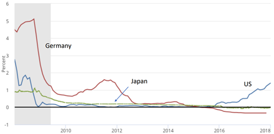
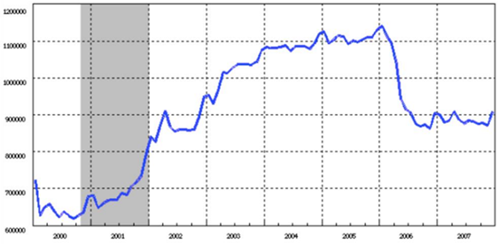
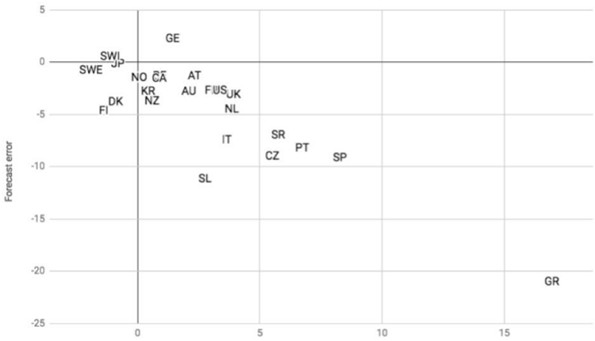

ポール・クルーグマンが1998年に発表した論文のタイトル。
(AIモードの解説)
バブル崩壊後の日本が陥ったゼロ金利下の「流動性の罠」を分析した極めて重要なマクロ経済学の論文です。デフレ下で実質金利を下げられない問題を解決するため、インフレターゲット導入などによる「期待」への働きかけを提案し、その後の異次元金融緩和の理論的基盤となった。
流動性わなは、名目金利がゼロまたはゼロ近くになったために、伝統的な金融政策が不能になった状態だ。こうなると、経済に monetary base を注入しても効果はない。
・・・
考えるにしても、流動性わなは起こり得ないし、起きなかったし、この先も起きない、というのが基本だ。
ところがこれが起きてしまったし、しかも世界第二位の経済におきてしまった。
・・・
でも、流動性わななんて、もう十分に理解できていてすぐに政策対応できるんじゃないの？
地下室から古いモデルを引っ張り出していて、ほこりを払って使えばいいだけでは？
・・・
じゃあどうして流動性わななんか可能なんだろうか。その答えは、通常のマネーの中立性議論にくっついている、あまり気がつかれない逃げの一句にある。
・・・
● 清算；日本症候群 (2000/2/9)
...to adhere to conventional monetary rules in the face of a liquidity trap is not prudent; it is irresponsible.
流動性の罠に直面している状況で、従来の金融政策のルールに固執することは賢明ではなく、無責任である。
● 日本への謝罪 (2014/10/30)
For almost two decades, Japan has been held up as a cautionary tale, an object lesson on how not to run an advanced economy. After all, the island nation is the rising superpower that stumbled. One day, it seemed, it was on the road to high-tech domination of the world economy; the next it was suffering from seemingly endless stagnation and deflation. And Western economists were scathing in their criticisms of Japanese policy.
この20年近くにわたり、日本は「反面教師」として、つまり先進国経済の運営を誤るとどうなるかを示す教訓として扱われてきた。何しろ、かつては台頭する超大国だったこの島国が、つまずいてしまったのだから 。ある日には、世界経済をハイテクで支配する道を歩んでいるように見えたかと思えば、次の日には、終わりの見えない停滞とデフレに苦しんでいた。そして欧米の経済学者たちは、日本の政策を厳しく批判していた。
I was one of those critics; Ben Bernanke, who went on to become chairman of the Federal Reserve, was another. And these days, I often find myself thinking that we ought to apologize.
私もそうした批判者の一人であり、後に連邦準備制度理事会（FRB）議長となるベン・バーナンキ氏もまた、その一人だった。そして最近、私はよく思うのだ。私たちは謝罪すべきではないか、と。
Now, I’m not saying that our economic analysis was wrong. The paper I published in 1998 about Japan’s “liquidity trap,” or the paper Mr. Bernanke published in 2000 urging Japanese policy makers to show “Rooseveltian resolve” in confronting their problems, have aged fairly well. In fact, in some ways they look more relevant than ever now that much of the West has fallen into a prolonged slump very similar to Japan’s experience.
もちろん、私たちの経済分析が間違っていたと言っているわけではない。1998年に私が発表した日本の「流動性のわな」に関する論文や、2000年にバーナンキ氏が発表し、日本の政策担当者に対して問題解決に向け「ルーズベルトのような決意」を示すよう促した論文は、今振り返っても色あせていない。それどころか、欧米諸国の多くが日本と非常によく似た長期不況に陥っている現在、それらの論文はかつてないほど今日的な意義を帯びているようにさえ見える。
The point, however, is that the West has, in fact, fallen into a slump similar to Japan’s — but worse. And that wasn’t supposed to happen. In the 1990s, we assumed that if the United States or Western Europe found themselves facing anything like Japan’s problems, we would respond much more effectively than the Japanese had. But we didn’t, even though we had Japan’s experience to guide us. On the contrary, Western policies since 2008 have been so inadequate if not actively counterproductive that Japan’s failings seem minor in comparison. And Western workers have experienced a level of suffering that Japan has managed to avoid.
しかし重要なのは、欧米諸国が実際に日本と同様の、いやそれ以上に深刻な不況に陥ってしまったという点だ。本来、そうした事態は起こるはずではなかった。1990年代当時、私たちは、もし米国や西欧が日本のような問題に直面したとしても、日本よりもはるかに効果的に対応できるだろうと考えていた。だが実際には、日本の経験という手本があったにもかかわらず、そうはならなかった。それどころか、2008年以降の欧米の政策は不十分であるばかりか、むしろ逆効果とさえ言えるものであり、それに比べれば日本の失敗など些細なことに思えるほどだ。そして欧米の労働者たちは、日本がなんとか回避できたような苦しみを味わうことになったのである。
What policy failures am I talking about? Start with government spending. Everyone knows that in the early 1990s Japan tried to boost its economy with a surge in public investment; it’s less well-known that public investment fell rapidly after 1996 even as the government raised taxes, undermining progress toward recovery. This was a big mistake, but it pales by comparison with Europe’s hugely destructive austerity policies, or the collapse in infrastructure spending in the United States after 2010. Japanese fiscal policy didn’t do enough to help growth; Western fiscal policy actively destroyed growth.
私が言及している政策の失敗とは、具体的にどのようなものだろうか。まずは政府支出から見てみよう。1990年代初頭、日本が公共投資を急拡大させて景気浮揚を図ったことは誰もが知っている。しかし、あまり知られていないのは、1996年以降、政府が増税を行う一方で公共投資が急速に減少したことだ。これによって、景気回復への動きが腰を折られることになったのである。これは大きな過ちでしたが、欧州の極めて破壊的な緊縮財政政策や、2010年以降の米国におけるインフラ投資の激減と比べれば、取るに足らないものです。日本の財政政策は成長を後押しするのに十分ではありませんでしたが、欧米の財政政策はむしろ積極的に成長を阻害しました。
・・・
I’ll be writing more soon about what’s happening in Japan now, and the new lessons the West should be learning. For now, here’s what you should know: Japan used to be a cautionary tale, but the rest of us have messed up so badly that it almost looks like a role model instead.
日本で今何が起きているのか、そして西側諸国がそこからどのような新たな教訓を学ぶべきかについては、近いうちに改めて書きたいと思います。とりあえず、これだけは知っておいてください。かつて日本は「反面教師」とされていましたが、他の国々があまりにも大きな失態を演じてしまった結果、今や日本はむしろ「手本」であるかのように見えてきているのです。
● 鏡の向こうの日本 (2014/11/16)
There are indications that Shinzo Abe may indeed do the right thing and postpone the planned rise in Japan’s consumption tax. Let’s hope so. But many people are still treating this as an agonizing choice. For example, Gavyn Davies frames it as a choice between recovery and fiscal sustainability, although he sort of acknowledges that this may be a false dilemma.
安倍晋三首相が正しい判断を下し、予定されていた消費税増税を延期する可能性があるという兆候が見られる。そうなることを願うばかりだ。しかし、多くの人々は依然としてこれを苦渋の選択と捉えている。例えば、ギャビン・デイヴィスはこれを景気回復と財政の持続可能性のどちらかを選ぶ問題として捉えているが、彼自身もそれが誤った二者択一である可能性を認めている。
Several points here.
いくつか指摘しておきたい点があります。
First, unless Japan breaks out of deflation, and the artificially high real interest rates this causes, there is no way to achieve fiscal sustainability. Success for Abenomics is as crucial for fiscal matters as everything else.
まず、日本がデフレから脱却し、それによって生じる人為的に高い実質金利を克服しない限り、財政の持続可能性を達成することは不可能だ。アベノミクスの成功は、財政面において他のあらゆる事柄と同様に極めて重要である。
・・・
Long ago I argued that what Japan needed was a credible promise to be irresponsible. And deficits that must be monetized are one way to make that happen
ずっと以前から私は、日本に必要なのは無責任さを貫くという確固たる約束だと主張してきた。そして、それを実現させる一つの方法として、財政赤字を貨幣化することが考えられる
・・・
As I and other people like Paul McCulley have tried to explain many times, the liquidity trap puts you on the other side of the looking glass; virtue is vice, prudence is folly, central bank independence is a bad thing and the threat of monetized deficits is to be welcomed, not feared.
私やポール・マッカリーのような人々が何度も説明しようとしてきたように、流動性の罠はあなたを鏡の向こう側に立たせる。そこでは美徳は悪徳、慎重さは愚行、中央銀行の独立性は悪いこと、そして貨幣化された赤字の脅威は恐れるべきものではなく歓迎すべきものとなる。
As it happens, I don’t think this stuff will come into play in Japan, where the Ministry of Finance’s deficit obsession ensures that tax hikes will at best be delayed, not canceled. But the whole premise of those who fear the consequences of delay misses the point.
実際には、日本の財務省は財政赤字に異常なほどこだわるため、増税はせいぜい延期されるだけで、中止されることはないだろう。しかし、延期による影響を懸念する人々の前提自体が、本質を見誤っている。
● 復活だぁっ！から20年 (2018) 機械翻訳
In early 1998 I set out to reassure myself by writing down a little model to show that if Japan was having troubles, it was simply because the Bank of Japan wasn’t trying hard enough.
1998年の初め、私はある簡単なモデルを書き出すことで、自分自身の考えを裏付けようと試みました。その考えとは、日本が苦境に陥っているのは単に日本銀行の努力が足りないからだ、というものでした。
But as sometimes happens when you try to model your intuitions explicitly (and is one of the main reasons for doing formal analysis), the model ended up telling me something quite different
しかし、直感的な見解を明示的なモデルに落とし込もうとする際によくあることですが（そして、それこそが形式的な分析を行う主な理由の一つでもあるのですが）、そのモデルが私に示した結論は、当初の予想とは全く異なるものでした。
namely, that when short-term interest rates are near zero it is not, in fact, easy for the central bank to reflate the economy.
すなわち、短期金利がゼロに近い状況下では、中央銀行が景気を再浮揚させることは実際には容易ではない、という事実です。
In fact, even very large increases in the monetary base will have essentially no effect unless the private sector is convinced that there has been a permanent shift in the central bank’s objectives, a new willingness to accept and even promote inflation. As I put it, the central bank needed to “credibly promise to be irresponsible.”
中央銀行の目標に恒久的な変化が生じたこと――つまり、インフレを容認し、さらには積極的に推進しようとする新たな姿勢――を民間部門が確信しない限り、その効果は実質的に皆無に等しいのです。私が表現した言葉を借りれば、中央銀行には「無責任になることを、信憑性をもって約束する」必要があったのです。
Ten years later my fears came true: as Figure 1 shows, with the coming of the global financial crisis the whole advanced world basically turned Japanese, experiencing a protracted era of near-zero interest rates. The United States has emerged from that era, barely; Europe and Japan itself have not.
10年後、私の懸念は現実のものとなりました。世界金融危機の到来とともに、先進国全体が実質的に「日本化」し、ゼロ金利に近い状態が長期間続く時代を経験することになったのです。米国はその時代から辛うじて脱却しましたが、欧州や日本自身は、いまだそこから抜け出せていません。

Furthermore, it was reasonable for the private sector to assume that even large increases in the monetary base in a liquidity-trap economy would be temporary. We saw this in practice when Japan adopted a policy of quantitative easing in the 2000s. As Figure 2 shows, this policy was quickly reversed once the economy appeared to be recovering.
流動性のわなに陥った経済においてマネタリーベースが大幅に拡大したとしても、それは一時的なものに過ぎないと民間部門が想定することは合理的でした。日本が2000年代に量的緩和政策を導入した際、実際にそのような動きが見られました。景気の回復傾向が見え始めると、この政策は速やかに撤回されたのです。

Realistically, then, monetary expansion under conditions of near-zero interest rates should be viewed as temporary – and more important, will be viewed as temporary, meaning that the intuitive proposition that huge increases in the monetary base must be inflationary is wrong.
現実的に見れば、ゼロ近傍の金利環境下における金融緩和は一時的なものと見なすべきであり、さらに重要なことに、実際に一時的なものと見なされることになります。つまり、「マネタリーベースの巨額な拡大は必然的にインフレを招く」という直感的な命題は誤りなのです。
In 1998 I argued that while a monetary expansion perceived as temporary would be ineffective in a liquidity trap, an expansion perceived as permanent would work – because it would raise the expected rate of inflation, and hence reduce real interest rates. So I declared that the Bank of Japan needed to “credibly promise to be irresponsible,” making clear its willingness to tolerate higher inflation.
1998年、私は次のように論じました。流動性の罠に陥っている状況下では、一時的だと認識される金融緩和策は効果を持たないものの、恒久的だと認識される緩和策であれば効果を発揮する――なぜなら、それは予想インフレ率を上昇させ、ひいては実質金利を低下させるからです。そこで私は、日本銀行は「無責任になることを信憑性をもって約束」する必要がある、すなわち、より高いインフレを容認する姿勢を明確にすべきだと主張したのです。
The first thing we’ve learned, disappointingly, is how hard it is to get central bankers to consider a regime change.
残念ながら最初に学んだのは、中央銀行の政策担当者に「レジーム・チェンジ（体制の転換）」を検討させるのがいかに難しいか、ということです。
When he became Prime Minister in 2012, Shinzo Abe – heretofore known as a conservative on many issues – surprised the world by endorsing a fairly radical monetary experiment. “Abenomics” was supposed to contain three “arrows” – fiscal stimulus and structural reform as well as monetary expansion.
2012年に首相に就任した際、それまで多くの問題において保守派として知られていた安倍晋三氏は、極めて急進的な金融政策の実験を支持し、世界を驚かせました。「アベノミクス」は、金融緩和に加え、財政出動と構造改革という「3本の矢」を柱とするものとされていました。
So how is Kurodanomics – a much better description in practice than Abenomics – working?
「アベノミクス」よりも実態を的確に表す「クロダノミクス」は、どのような成果を上げているのだろうか。
this higher expected inflation reduces real interest rates; and lower real interest rates create an economic boom that generates the expected inflation.
中央銀行はインフレ目標を達成するという姿勢を市場に確信させなければならない。そうしてインフレ期待が高まれば実質金利は低下し、その低下した実質金利が景気拡大をもたらすことで、実際にインフレが引き起こされるというわけである。
This is obviously even harder than convincing the market that there has been a monetary regime change. And it also raises the prospect of what I’ve called the timidity trap: if the inflation target is set too low, it won’t generate the required economic boom even if markets believe the central bank will hit it. I find this especially worrisome for Japan, where demographic factors – a rapidly shrinking working-age population – suggest that the conventional 2 percent target might well be too low to achieve economic escape velocity.
これは明らかに、金融政策の枠組みが転換したと市場に納得させることよりもさらに困難な課題です。また、私が「臆病さの罠（timidity trap）」と呼んできた事態を招く恐れもあります。つまり、インフレ目標が低すぎると、たとえ市場が中央銀行による目標達成を信じたとしても、経済を活性化させるために必要なブーム（好況）は生まれないということです。私はこの点を、特に日本にとって懸念すべきことだと考えています。日本では、急速な生産年齢人口の減少といった人口動態上の要因を考慮すると、経済が「脱出速度（escape velocity）」に達して成長軌道に乗るためには、従来の2％という目標では低すぎる可能性があるからです。
But let me not end on a down note. I began this paper by framing it as an assessment of how modern liquidity-trap analysis, brought into being two decades ago in an attempt to make sense of Japan’s problems, has fared in the aftermath of a global crisis that produced Japan-like conditions in many countries. And the answer, I’d argue, is that it has done very well.
暗い話で締めくくるのはやめておきましょう。20年前に生まれた現代の「流動性のわな」に関する分析が、日本と同様の状況を多くの国にもたらした世界的な危機の後において、どのような評価に値するのかを検証すると述べました。そしてその答えは、極めて良好なものであったと私は考えます。
If economists were like natural scientists, we’d be celebrating the success of our standard model.
もし経済学者が自然科学者であったなら、私たちは自分たちの「標準モデル」の成功を祝っていたはずです。
Confronted with conditions very different from those encountered in the past, the model made predictions very much at odds with the expectations of many policymakers and market participants. And those predictions proved correct.
過去に直面した状況とは大きく異なる事態に直面した際、そのモデルは、多くの政策立案者や市場参加者の予想とは大きく食い違う予測を導き出しました。そして、その予測は正しかったことが証明されたのです。
But aside from that, this is basically a happy story.
基本的にハッピーエンドの物語なのです。

横軸：緊縮政策の度合い
縦軸：景気の予測誤差
緊縮の度合いが大きいほど、体系的に景気後退を過小評価している